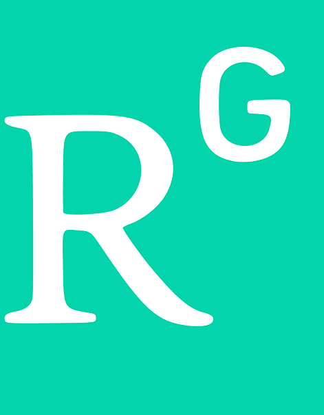
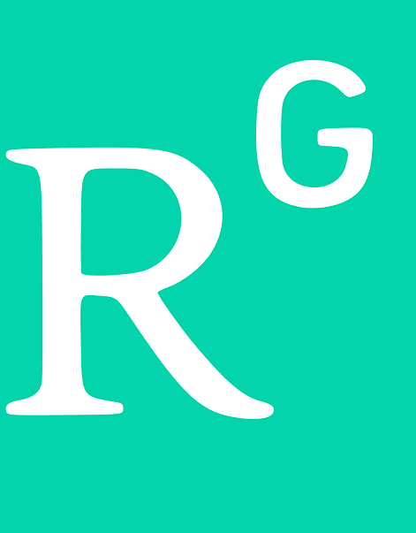

Bridge/Structural Engineer (CURRENT-JAN 2025)
ArDOT (Arkansas Department of Transportation)
As a Bridge Engineer at ArDOT, I am working on a variety of projects encompassing the complete design of bridges, retaining walls, and some miscellaneous structural projects. I am also utilizing Python, VBA, and LaTeX coding to automate design works.